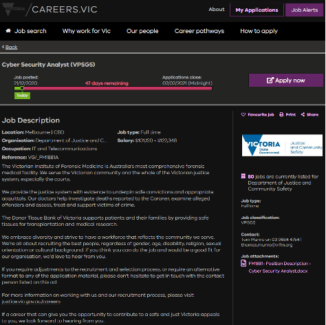
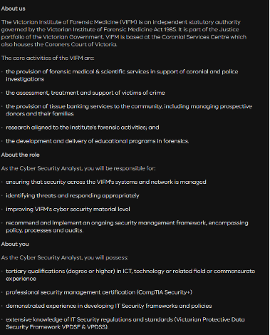

As I have mentioned in the previous questions about myself, I would love to work in the field of Policing and Information Technology. Jobs regarding cyber security and intelligence are up there on my list.
https://careers.vic.gov.au/job/cyber-security-analyst-525734?jbc=indi
 This advertisement that I found would be a Job that I would like to try after my experience with Victoria Police as an Officer. There are many Jobs that involve an Information Technology degree with Victoria Police. This one is for the Forensics department, and involves managing the security of sensitive information for this specific department. Identifying threats and forming countermeasures to see that those threats do not cause problems. As forensics is an important part of Policing and case management, the information stored in secure data vaults is highly sensitive. Through my policing course I have gained a fascination in how police these days are trying ways to prevent crime before it even happens. Helping this cause by means of a job with them involving technology is what makes me exited about this role.
The qualifications for this course Include having:
- Degree or higher in ICT or technology
- Professional security management certification
- Experience in developing IT security frameworks and policies
- Extensive knowledge of IT security regulations and standards
The qualifications I have:
So far, I am starting from scratch meaning that I have some knowledge of IT security regulations, from the previous policing course that I finished. Other than I do not possess the qualifications that this job requires.
How I will gain the knowledge:
I am starting here in The Information technology degree so that I can gain the first requirement. Hopefully I finish this course and gain a degree that will cross the first objective out f the list. The second can be gained through another course that I will have to complete. Through my course last year, I was informed of another course within the policing program that, allowed for the professional security management certification to be acquired within a year. This is a course that does require previous information technology experience or degree. As this is all going on, I would have gone through the police requirement phase which I am on right now. I would be working as a part time police officer, which is a new program run by Victoria Police. After the degree is over will be allowed to choose a department with the police to work in. I would have to choose a department which works with IT, to learn and get more experience with IT security regulations and standards. And for the last requirement I would have to some part time work with a security company or organisation, to gain experience with IT security frameworks and policies. A part time job with software companies that work with security systems would be ideal to gain this type of experience.